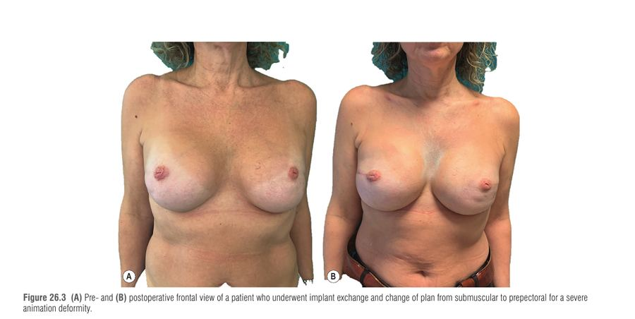
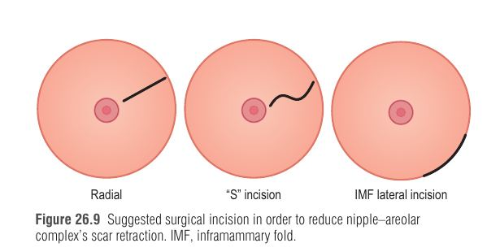

גם שחזור שד מוצלח לעיתים אינו סופי: נדרשות "השלמות" קטנות. הפרק עוסק בארבע פרוצדורות עידון עיקריות לאחר שחזור שד מבוסס שתל, בעידן החדש של שחזור ישיר לשתל (DTI) ושל מישור פרה-פקטורלי: השמנת שומן עצמית, תיקון מיקום הפטמה-עטרה (NAC), תיקון עיוות אנימציה, וסימטריזציה של השד הנגדי.
הפרק מתאר "מסע" של המטופלת: 4-5 השבועות הראשונים לאחר האבחנה מלאי פחד ממוות ← בהמשך (עד כשנה) המיקוד באונקולוגיה (כימותרפיה והקרנות) ← ורק אחר כך עובר המיקוד אל התוצאה האסתטית, שנמשכת כל החיים. לכן מטופלת שמרוצה בתחילה עלולה לבקש תיקונים שנים אחר כך.
מטופלות עם מוטציית BRCA (כריתה מניעתית) הן קבוצה מיוחדת: הן בריאות כרגע, ולכן פחות מוכנות לקבל פגמים, ולעיתים רואות בניתוח "פרס" והזדמנות לשפר את מראה השד. חובה לכן ייעוץ מקיף, ייעוץ פסיכולוגי, בחירת מטופלת נכונה והצבת ציפיות, וכן קבלת החלטות משותפת (shared decision-making) שבה הרופא מביא מומחיות ואפשרויות, והמטופלת מביאה את ערכיה ומטרותיה.
שני החידושים של העידן הנוכחי: DTI במקום שחזור דו-שלבי (זול יותר, פחות נטל פסיכולוגי, שיעור סיבוכים דומה, פחות תזוזת NAC ותזוזת IMF), ומישור פרה-פקטורלי במקום רטרופקטורלי. ההתקדמות התאפשרה בזכות כריתת שד משמרת פטמה, כריתה מצמצמת עור, הערכת זילוח, שיפור השתלים, ו-ADM ורשתות סינתטיות. החיסרון של ADM: תגובת גוף זר שמעלה סיכון לסרומה, זיהום, המטומה ונמק (חלק מהמנתחים מדווחים על עלייה של פי 4-5 בסיבוכים). חלופה: שתל מצופה פוליאוריתן, שמתספג ומסייע ליצירת קפסולה אידיאלית, אך זמינותו משתנה לפי מדינה.
עיוות אנימציה (breast animation deformity, BAD) אינו סיבוך אלא תוצאה צפויה של מישור תת-שרירי. הפקטורליס מייג'ור מתכווץ בכפיפה, אדוקציה ורוטציה פנימית של הזרוע, ודוחף את השתל כיחידה אחת כלפי מעלה/מטה ולטרלית, מה שיוצר עיוות, אי-נוחות ולעיתים עווית שרירית כואבת. ככל שמעטפת העור דקה יותר, כך נוצרות הידבקויות והצלקות לשריר והעיוות בולט יותר.
שרשרת הסיבתיות של עיוות אנימציה.
שכיחות: עד 53% לאחר הגדלה ו-75.6% לאחר שחזור (Spear ו-Nigro); המחברים מדווחים על 100% בשחזורים מבוססי שתל, וההבדל רק בחומרה. כמעט מחצית מהמטופלות מושפעות, ועד 40% מדווחות על השפעה פסיכולוגית שלילית. מניעי הניתוח החוזר: כאב, מצוקה רגשית ושינוי במראה. החומרה קשורה לכמות השריר המעורבת (שכיחה במיוחד בטכניקת Regnault).

| סולם | מבנה | נקודה חשובה |
|---|---|---|
| Pelle-Ceravolo | 3 מחלקות | I: מינימלי/אין; II: בינוני עם השפעה אסתטית מוגבלת; III: בולט ובלתי קביל |
| Spear / Nigro | 4 דרגות | I: אין עיוות ואי אפשר להבחין במישור; IV: עיוות חמור בכיווץ |
| Vidya | 4 דרגות לפי הפרעה לפעילות | דרגה I לא מצריכה ניתוח, IV מצריכה תיקון, ושתיים באמצע דורשות ייעוץ |
| Kim (כמותי) | 3 דרגות | סף תזוזת פטמה: 2 ס"מ; סף עיוות עור: 25% משטח בסיס השד |
אפשרויות: בוטולינום, השמנת שומן, נוירקטומיה סלקטיבית, שחרור/פיצול הפקטורליס, קפסולוטומיה/קפסולקטומיה, והחלפת שתל. רוב הטכניקות מקלות אך אינן פותרות את הסיבה; הפתרון האמיתי הוא המרת מישור מתת-שרירי לפרה-פקטורלי.
אלגוריתם הבחירה כפי שמתואר בפרק.
השמנת שומן היא כלי המפתח לעידון. התוויות: תיקון עיוותי קו מתאר (שלב step-off בקוטב העליון, אדוות וקמטים, וסיווג Kanchwala לעיוותים פנימיים/חיצוניים), טיפול בכאב לאחר כריתה, טיפול והכנה של רקמה מוקרנת, הקטנת כיווץ קפסולרי, והכנה מוקדמת לפני המרת מישור בחולות עם מעטפת דקה או צלקת מרכזית דבוקה לשריר. גם לאחר שנים שבהן השתל לוחץ על העור ויוצר דילול ואדוות, שומן מונע ומתקן.
הקרנה גורמת לפיברוזיס (פגיעה בפיברובלסטים) וירידה בזילוח ← תאי גזע, ציטוקינים וגורמי גדילה שבשומן משפרים את הרקמה המוקרנת ← לכן ברקמה מוקרנת דרושים יותר מפגשים: 2.7 מפגשים בשד לא מוקרן מול 4.8 בשד מוקרן (Khouri); שני המפגשים הראשונים הופכים את נזק הקרינה, והבאים מוסיפים נפח.
החשש האונקולוגי (תאי גזע מזינים הפעלה מחודשת של תאים רדומים): Petit (2011) מצא עלייה קטנה בהישנות מקומית לאחר שימור שד ולא לאחר כריתה; Kronowitz (2016, 1,024 שדיים מול 670 ביקורת) לא מצא הבדל בהישנות; Rubin (2012) הראה שדווקא לאחר הפחתת שד יש ציון BI-RADS גבוה יותר ויותר ביופסיות מאשר לאחר השמנת שומן.
| שלב | פרט |
|---|---|
| חדירה | ליפוסוקשן רטוב/טומסנטי; אדרנלין כמכווץ כלי דם; Naropin (רופיווקאין) ולא לידוקאין שמעכב גדילת אדיפוציטים |
| שאיבה | אחרי 10 דקות; קנולת Coleman ומזרק 10 סמ"ק, לחץ שאיבה נמוך; אתר התורם לפי מבנה הגוף (אין אתר עדיף ברור) |
| עיבוד | שטיפה ברינגר לקטט ביחס 50% (שלוש פעמים), הפרדה והשלכת נוזל ושברים |
| הזרקה | קנולה 2 מ"מ, בצורה נסוגה (retrograde) במישורים ובעומקים מרובים; דגם מניפה ואז הצלבה ב-90° על עמק האדוות (מקביל מחמיר); בדיקה בישיבה למחצה |
| עם מרחיב | שואבים מהמרחיב נפח מלוח השווה לשומן המתוכנן, כדי להפחית לחץ על השתל |
סיבוכים: ציסטות שמן, נמק שומן וסידוניות, קליטה לא צפויה, זיהום וגושים מוחשיים. בניסוי אקראי של Juhl ירד כאב ב-54.9% (VAS) והצלקת השתפרה; ב-BREAST-Q (Cogliandro) נמצאה שביעות רצון גבוהה יותר בקבוצת השומן.
הפטמה היא מה ש"הופך תל לשד". בכריתה משמרת פטמה שיעור מלפוזיציה מדווח 7.4% עד 75%. בניגוד להפחתת שד, בשחזור יש סיכון גבוה יותר לנמק/ריפוי מושהה כי הזילוח התת-דרמלי ירוד. גורמי סיכון עצמאיים: הקרנה קודמת וחתך כריתה אנכי.
| סוג | משמעות | הטיפול |
|---|---|---|
| אמיתית (True) | פטמה בעמדה שגויה על דופן החזה | כריתת עור ישירה, כריתה פריאראולרית חצי-סהר, דש טרנספוזיציה, ובמוצא אחרון שתל חופשי (סיכון לדה-פיגמנטציה ואובדן בליטה) |
| מדומה (False) | נובעת מניתוח כיס שגוי או שתל לא נכון | שינוי קפסולה, כיס ושתל |
| משולבת | שני הגורמים; נדירה | מטפלים בשניהם |
דרגות: קלה מתחת ל-1 ס"מ, בינונית 1-2 ס"מ, חמורה מעל 2 ס"מ. מניעה: קיבוע ישיר או נקזי יניקה והדבקת מעטפת העור כראוי. צלקת: חתך רדיאלי/"S"/צדדי ב-IMF מפחית כיווץ צלקתי. מצב נדיר: הפטמה לא מרכזית בתוך העטרה, מתוקן בדש טרנספוזיציה. בשחזור חד-צדדי, השד הטבעי מזדקן ונהיה פטוטי בעוד המשוחזר נשאר באותה גובה.

שד משוחזר בשתל סטטי (גובה, צורה ונפח קבועים), והשד הטבעי דינמי: צונח, מצטמק בירידה במשקל וגדל בעלייה. לכן הסימטריה מתרופפת עם השנים, וצריך להזהיר את המטופלת ולתאם מראש עם המנתח האונקולוגי.
| אפשרות | מתי | נקודות מפתח |
|---|---|---|
| הפחתה/מסטופקסיה | שד בינוני-גדול; הפרוצדורה העיקרית | הקושי: מלאות הקוטב העליון לאורך זמן |
| הגדלה | שד קטן ורצון בנפח | רטרוגלנדולרי + השמנת שומן בקוטב העליון (מניעת אנימציה); שתל בעל בליטה מוגברת/מלאה כשהפטמה נשמרת; רוחב השתל הנגדי כרוחב השתל בצד הכריתה פחות עובי המעטפת (בדיקת צביטה). שתל בצד הנגדי מייצב לאורך זמן אך מוסיף גוף זר |
| "הגדלה היברידית" | שחזור פרה-פקטורלי בנשים עם שד קטן | שתל ושומן משלימים זה את זה בשני הצדדים, כדי ליצור הזדקנות דומה |
סימון להפחתה: Wise; סימון נקודת Pitanguy (היטל ה-IMF) להצבת הפטמה (קצה עליון של העטרה כ-2 ס"מ מעל אמצע הזרוע, 19-22 ס"מ מחריץ החזה); עטרה 4.5 ס"מ; תמרון Aufricht בזווית 50-70 מעלות; עמודים 5-7 ס"מ. טכניקה: פדיקל עליון (מדיאלי/לטרלי), כריתת "קיל" עד הצלע השלישית ליצירת משפך, ושני דשים: העליון לפטמה, והתחתון (Planas) אדיפו-גלנדולרי שאפשר לעצב לפי הצורך במלאות. הבליטה תלויה בעובי הדש התחתון: נשאר כמעט ללא שינוי במסטופקסיה, ואפשר לכרות לגמרי בהפחתה. לקוטב עליון: תופרים את הדש התחתון לפאשיית הפקטורליס; לקוטב תחתון: משאירים אותו מאחורי העליון ללא תפירה. סגירה: תפרים תת-עוריים נספגים ותפר תוך-עורי, והפטמה בתפרים חצי-קבורים להגברת זילוח. עבור הפחתה/הגדלה-מסטופקסי משתמשים בטכניקת "המרפסת" (balcony).
F – Fat grafting – השמנת שומן.
A – Animation correction – המרה לפרה-פקטורלי.
N – NAC repositioning – תיקון מיקום הפטמה.
S – Symmetrization – התאמת השד הנגדי.
דמייני מאוורר גדול (FANS) במסעדה: ארבעת הלהבים מסתובבים מסביב ללב המאוורר, כל להב מנפח רוח צינה שמרגיעה פגם אחר: שומן ממלא את הקמטים, הלהב השני "משחרר" את השריר המושך, השלישי מזיז את הפטמה למקומה, והרביעי מאזן את הצד השני.
| מספר למבחן | ערך |
|---|---|
| צביטה בקוטב העליון | מעל 1 ס"מ = המרת מישור |
| סף Kim | פטמה 2 ס"מ ועיוות עור 25% |
| מפגשי שומן | 2.7 (לא מוקרן) מול 4.8 (מוקרן) |
| מלפוזיציית NAC | קלה <1, בינונית 1-2, חמורה >2 ס"מ |
בת 41, נשאית BRCA1, עברה לפני 3 שנים כריתה דו-צדדית משמרת פטמה ושחזור תת-שרירי דו-שלבי. היא מתלוננת על כאב ועל "קפיצת" השד בכל פעם שהיא מכווצת את החזה בחדר הכושר. בבדיקה: בכיווץ הפקטורליס, הפטמה זזה 2.5 ס"מ והעור מתעוות בכ-30% משטח השד; הצביטה בקוטב העליון 0.7 ס"מ.